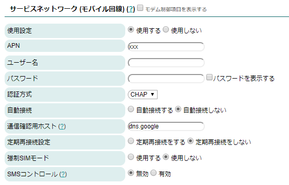
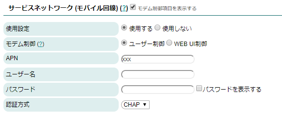
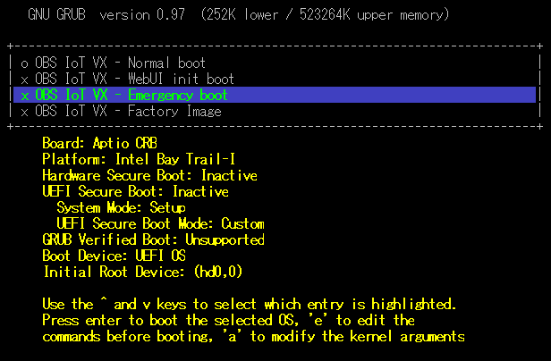
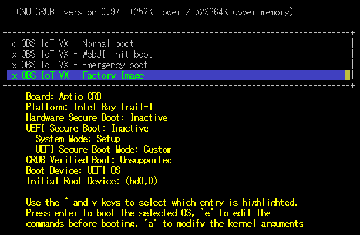
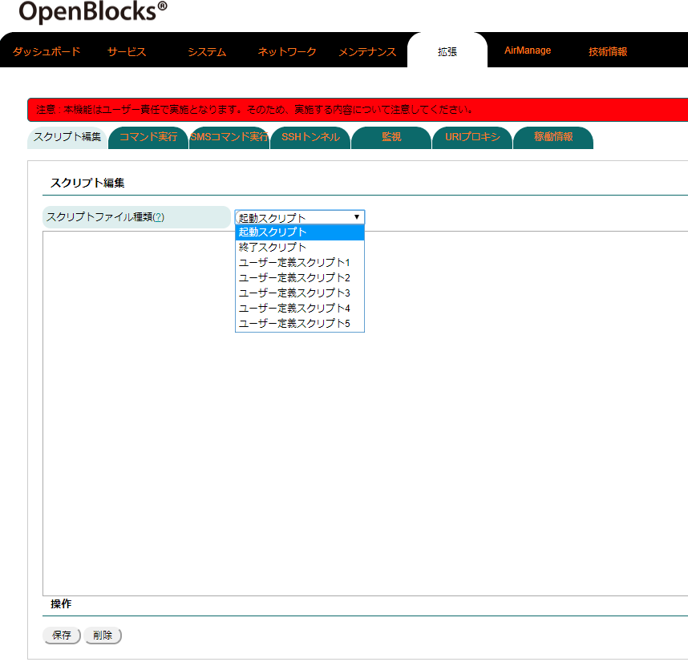
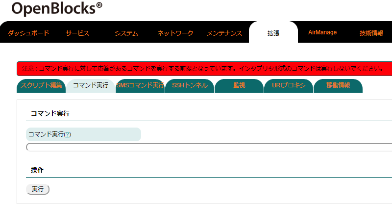
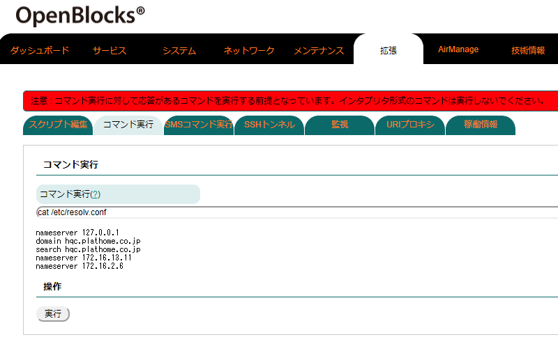
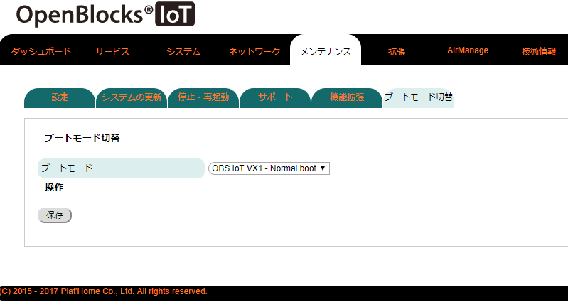

ご利用方法¶
本装置はDebian GNU/Linuxを採用した汎用サーバー製品です。そのため、通常の Debianと同様にご利用いただいて構いません。また、本項では本装置特有の情報を記載しております。
ステータスインジケーターの表示色¶
OpenBlocksシリーズの正面にあるLEDはRGBの組み合せで7色に点灯し、それぞれの表示色で点滅などをスクリプト制御しています。
WEB UIが使用されている場合には、デフォルトのLED点灯仕様は以下の通りになっています。
ステータスインジケーター |
|||
|---|---|---|---|
状態 |
色 |
点灯状態 |
備考 |
本体及びOS起動中 |
黄 |
点灯 |
本体起動及びOS起動が終わるとモバイル回線の電波受信 チェックへ移行します。 ※SIMが挿入されていない場合は緑点滅。 |
SIMスロット未使用 |
緑 |
点滅 |
SIMが無い状態での正常稼働または電波受信待機状態へ の移行待ち状態。 |
モバイル回線電波：強 |
白 |
点滅 |
「開発者ガイド」の電波状態詳細参照。 |
モバイル回線電波：中 |
水色 |
点滅 |
「開発者ガイド」の電波状態詳細参照。 |
モバイル回線電波：弱 |
青 |
点滅 |
「開発者ガイド」の電波状態詳細参照。 この電波強度での通信はリトライが多発する可能性が あります。そのため、モバイル回線を使用する場合に はなるべく電波強度が中以上の状態にて使用してくだ さい。 |
モバイル回線電波：圏外 |
紫 |
点滅 |
「開発者ガイド」の電波状態詳細参照。 |
FUNCボタンによる機能 有効時 |
黄 |
点滅 |
モバイル回線やSIMスロット未使用時におけるステータ スインジケーターと交互点滅となります。 |
OS終了中 |
黄 |
点灯 |
|
AirManage初回アクセス 失敗時 |
赤 |
点灯 |
AirManageリモート管理サーバへの初回アクセスが失敗 した際に表示となります。WEB UI未使用時の場合は5分 後にOSが終了します。 |
強制SIMモード時におけ るモデムデバイスファイ ルまたはSIMカード認識 失敗時 |
赤 |
点灯 |
モデム搭載モデルにおいて強制SIMモードを有効にし、 起動時にモデムのデバイスファイルが存在しないまたは SIMカードが認識できない場合の表示となります。 5分後にOSが再起動します。 |
AirManage及びSIM認識 失敗時のOS終了中 |
赤 |
点灯 |
|
電波状態詳細 |
||||
|---|---|---|---|---|
HW / モデム種別 |
電波：強 |
電波：中 |
電波：弱 |
電波：圏外 |
BX1 |
-87dBm以上 |
-88～-108dBm |
-109～-112dBm |
-113dBm以下 |
BX3 |
-87dBm以上 |
-88～-108dBm |
-109～-112dBm |
-113dBm以下 |
BX5 |
-95dbm以上 |
-95.1～-105dBm |
-105.1～-120dBm |
-120.1dBm以下 |
LTEモジュール(KDDI) |
アンテナ2本以上 |
アンテナ1本時 |
アンテナ0本時 |
圏外時 |
LTEモジュール(NTTドコモ) |
アンテナ3本時 |
アンテナ2本時 |
アンテナ1本時 |
圏外時 |
LTE/3Gモジュール(ソフトバンク) |
AT+CSQ値: 14以上 |
AT+CSQ値: 13 ～ 3 |
AT+CSQ値: 2 ～ 1 |
AT+CSQ値: 0または99 |
LTE/3Gモジュール(NTTドコモ/KDDI) |
-95dbm以上 |
-95.1～-105dBm |
-105.1～-120dBm |
-120.1dBm以下 |
BWAモジュール |
-95dbm以上 |
-95.1～-105dBm |
-105.1～-120dBm |
-120.1dBm以下 |
3Gモジュール(NTTドコモ) |
-87dBm以上 |
-88～-108dBm |
-109～-112dBm |
-113dBm以下 |
3Gモジュール(ソフトバンク) |
-87dBm以上 |
-88～-108dBm |
-109～-112dBm |
-113dBm以下 |
電波状態判定 |
|
|---|---|
HW / モデム種別 |
電波状態判定 |
BX1 |
RSSIによる判定 |
BX3 |
RSSIによる判定 |
BX5 |
RSRPによる判定 |
LTEモジュール(KDDI) |
モデムモジュールによる判定 |
LTEモジュール(NTTドコモ) |
モデムモジュールによる判定 |
LTE/3Gモジュール(ソフトバンク) |
AT+CSQ値判定 |
LTE/3Gモジュール(NTTドコモ/KDDI) |
RSRPによる判定 |
BWAモジュール |
RSRPによる判定 |
3Gモジュール(NTTドコモ) |
RSSIによる判定 |
3Gモジュール(ソフトバンク) |
RSSIによる判定 |
WEB UI使用時のLED点灯制御スクリプト
/var/webui/bin/set_signal_value.sh
/var/webui/scripts/led_updater.sh
●LEDの制御
LEDの表示色・点灯状態を変更する場合は、/tmp/.runledファイルの内容を編集します。
尚、WEB UI使用時におけるSIM挿入時は電波強度と連動する為、定期的に本ファイルが更新されます。そのため、意図的に変更する場合は、WEB UIを未使用とするかLED点灯制御スクリプトを終了させてください。
行 |
設定内容 |
備考 |
|---|---|---|
1行目 |
点灯1 時間(msec) |
1以上 |
2行目 |
点灯2 時間(msec) |
1以上 |
3行目 |
点灯1 色番号 |
下表参照 |
4行目 |
点灯2 色番号 |
下表参照(省略した場合、0) |
色番号 |
色 |
|---|---|
0 |
非点灯 |
1 |
赤 |
2 |
緑 |
3 |
黄 |
4 |
青 |
5 |
紫 |
6 |
水色 |
7 |
白 |
範囲外 |
非点灯 |
1秒毎に黄色点滅 |
|---|
# echo -e "1000\n1000\n3" > /tmp/.runled |
1秒毎に黄色/緑色交互点滅 |
|---|
# echo -e "1000\n1000\n3\n2" > /tmp/.runled |
モバイル回線向けモデム制御¶
本装置搭載のモデムモジュールの電源ON/OFFや電波状態をチェックするツールを搭載しています。
コマンド名：atcmd
起動方法1：atcmd [コマンド]
起動方法2：atcmd [コマンド1] [コマンド2] [コマンド3]
起動方法3 ：atcmd -d [デバイスファイル] [コマンド]
起動方法2のように、コマンドを列挙して順次実行することが可能です。
また、起動方法3のように使用するデバイスファイルを指定実行することも可能です。
コマンド |
機能 |
備考 |
|---|---|---|
PON |
モデム電源ON |
|
POFF |
モデム電源OFF |
|
PRST |
モデムreboot |
ソフトウェアリセット (一部、ハードウェアリセット) |
HRST |
モデムreboot |
ハードウェアリセット |
SMONI |
電波強度取得 |
|
CSQ |
電波強度取得 |
LTEモジュール(NTTドコモ/KDDI)及びBWAモジュールでは、正しい電波強度 取得は行えません。 |
SIND |
基地局からの時刻取得 |
BX1限定 |
CCLK |
基地局からの時刻取得 |
BX3限定 |
CCID |
SIMの番号取得 |
|
CTZU 1 |
タイムゾーン自動取得 |
BX1及びEX/VXシリーズ LTEモジュール(NTTドコモ)以外のモデルのみ対応 ※スペースが入ります。 |
ATI |
モデム型番取得 |
|
CGSN |
モデムシリアル番号取得 |
コマンドは上記表の内容で指定します。
電源ON、SIM番号取得、電源OFF |
|---|
# atcmd PON CCID POFF xxxxxxxxxxxxxx |
電源ON、電波強度取得、電源OFF |
|---|
# atcmd PON CSQ POFF -86 |
WEB UIでは常時電波状況取得によりデバイスファイルを占有しています。そのため、本コマンドはWEB UIにて使用していないデバイスファイルを指定し実行してください。尚、WEB UIを使用していない環境またはユーザー制御では本制約はありません。
尚、使用モジュールによってatcmdにて使用できるデバイスファイルが異なります。
BX1 |
|
|---|---|
デバイスファイル |
atcmd使用可否 |
/dev/ttyMODEM0 |
使用可能 |
/dev/ttyMODEM1 |
使用不可 |
/dev/ttyMODEM2 |
使用不可 |
/dev/ttyMODEM3 |
使用可能 |
/dev/ttyMODEM4 |
使用可能 |
/dev/ttyMODEM5 |
使用不可 |
/dev/ttyMODEM6 |
使用不可 |
BX3 |
|
|---|---|
デバイスファイル |
atcmd使用可否 |
/dev/ttyMODEM0 |
使用可能 |
/dev/ttyMODEM1 |
使用可能 |
/dev/ttyMODEM2 |
使用可能 |
/dev/ttyMODEM3 |
使用不可 |
/dev/ttyMODEM4 |
使用不可 |
/dev/ttyMODEM5 |
使用不可 |
/dev/ttyMODEM6 |
使用不可 |
BX5 |
|
|---|---|
デバイスファイル |
atcmd使用可否 |
/dev/ttyMODEM0 |
使用可能 |
/dev/ttyMODEM1 |
使用不可 |
/dev/ttyMODEM2 |
使用不可 |
/dev/ttyMODEM3 |
使用可能 |
/dev/ttyMODEM4 |
使用不可 |
EX/VXシリーズ LTE/3Gモジュール(ソフトバンク) |
|
|---|---|
デバイスファイル |
atcmd使用可否 |
/dev/ttyMODEM0 |
使用可能 |
EX/VXシリーズ LTEモジュール(KDDI) |
|
|---|---|
デバイスファイル |
atcmd使用可否 |
/dev/ttyMODEM0 |
使用可能 |
EX/VXシリーズ LTEモジュール(NTTドコモ/KDDI) |
|
|---|---|
デバイスファイル |
atcmd使用可否 |
/dev/ttyMODEM0 |
使用可能 |
/dev/ttyMODEM1 |
使用不可 |
/dev/ttyMODEM2 |
使用不可 |
/dev/ttyMODEM3 |
使用可能 |
/dev/ttyMODEM4 |
使用不可 |
EX/VXシリーズ BWAモジュール |
|
|---|---|
デバイスファイル |
atcmd使用可否 |
/dev/ttyMODEM0 |
使用可能 |
/dev/ttyMODEM1 |
使用不可 |
/dev/ttyMODEM2 |
使用不可 |
/dev/ttyMODEM3 |
使用可能 |
/dev/ttyMODEM4 |
使用不可 |
EX1/3Gモジュール(NTTドコモ) |
|
|---|---|
デバイスファイル |
atcmd使用可否 |
/dev/ttyMODEM0 |
使用可能 |
/dev/ttyMODEM1 |
使用可能 |
/dev/ttyMODEM2 |
使用可能 |
/dev/ttyMODEM3 |
使用不可 |
/dev/ttyMODEM4 |
使用不可 |
/dev/ttyMODEM5 |
使用不可 |
/dev/ttyMODEM6 |
使用不可 |
EX1/3Gモジュール(ソフトバンク) |
|
|---|---|
デバイスファイル |
atcmd使用可否 |
/dev/ttyMODEM0 |
使用可能 |
/dev/ttyMODEM1 |
使用可能 |
/dev/ttyMODEM2 |
使用可能 |
/dev/ttyMODEM3 |
使用不可 |
/dev/ttyMODEM4 |
使用不可 |
/dev/ttyMODEM5 |
使用不可 |
/dev/ttyMODEM6 |
使用不可 |
モバイル回線接続¶
モバイル回線モデムの制御はWEB UIにて行っております。
WEB UI制御における必要時のみモバイル回線接続する方式(オンデマンド接続)及びWEB UIからモデムの制御を完全に排他したユーザー制御方式をサポートしています。
オンデマンド接続¶
WEB UIのネットワーク→基本タブにアクセスし、モバイル回線の接続に必要な情報を設定します。

必要な情報は以下となります。 ・APN(LTEモジュール(KDDI)時は項目が有りません) ・ユーザー名 ・パスワード ・認証方式 ・自動接続 : "自動接続しない"を選択してください。 ・通信確認用ホスト ・定期再接続設定 （・モバイル回線再接続時間） ・SMSコントロール(LTEモジュール(KDDI)時は項目が有りません) ※SMSコントロールは使用する場合にのみ設定してください。 |
保存ボタンを押し、再起動することでモバイル回線モデムへの反映は完了します。
また、モバイル回線のオンデマンド接続及び切断のコマンドは以下となります。尚、下記のコマンドラインにおける数字の"1"はオンデマンド接続を前提とするものです。"0"を指定した場合には、接続を保持する常時接続となります。
●モバイル回線の接続 |
|---|
# /var/webui/scripts/mobile_control.sh con 1 |
●モバイル回線の切断 |
|---|
# /var/webui/scripts/mobile_control.sh coff 1 |
上記のコマンドを組み合わせたシェルスクリプトのサンプルは以下です。
内容は以下となっております。
1, モバイル回線の接続。
2, DNSサーバに対してpingコマンドを実行。
3, モバイル回線の切断。
#!/bin/bash echo "#------------------------------------------------------------#" echo "# Connect (date)" echo "#------------------------------------------------------------#" /var/webui/scripts/mobile_control.sh con 1 sleep 2 echo "" echo "#------------------------------------------------------------#" echo "# Command Exec (date)" echo "#------------------------------------------------------------#" ping -c 3 8.8.8.8 echo "" echo "#------------------------------------------------------------#" echo "# Disonnect (date)" echo "#------------------------------------------------------------#" /var/webui/scripts/mobile_control.sh coff 1 sleep 2 exit 0 |
モバイル回線モデムのユーザー制御¶
本項は3Gモジュール向けの説明となっております。
WEB UIのネットワーク→基本タブにアクセスし、モバイル回線の接続に必要な情報を設定します。尚、LTEモジュールは本機能に対応しておりません。

本項目を実施する場合には、「モデム制御項目を表示する」にチェックをしてください。 設定に必要な情報は以下となります。 ・モデム制御：”ユーザー制御”を選択してください。 ・APN ・ユーザ名 ・パスワード ・認証方式 |
WEB UIにて設定した情報は以下のコマンドでモデムへ反映可能です。
●モデム設定反映コマンド |
|---|
# /var/webui/scripts/setapn.sh |
モデム設定反映コマンドで使用しているコンフィグファイルは以下となります。
●モデム設定反映用コンフィグファイル |
|---|
/var/webui/config/ppp0_device.sh /var/webui/upload_dir/modem.sh |
設定情報をさらに変更した場合には、以下のファイルを作成し設定することにより情報を上書きすることが可能です。
●情報上書き用ファイル |
|---|
/var/webui/upload_dir/user_modem.sh |
●変数内容 |
||
|---|---|---|
変数名 |
内容 |
備考 |
modem_ppp0_apn |
APN |
|
modem_ppp0_user |
ユーザー名 |
|
modem_ppp0_pass |
パスワード |
|
modem_ppp0_authtype |
パスワード |
PAPまたはCHAP |
modem_ppp0_provier |
プロバイダ名 |
pon/poffコマンドでの指定 |
DEVICE_CONNECT |
モバイル回線接続用デバイスファイル |
/dev/ttyMODEM[0-9]*となります。 |
DEVICE_SETTING |
モバイル回線設定用デバイスファイル |
/dev/ttyMODEM[0-9]*となります。 |
●設定サンプル |
|---|
modem_ppp0_apn="iixxxx.jp" modem_ppp0_user="test@iixxxx" modem_ppp0_pass="xxxx" modem_ppp0_authtype="PAP" modem_ppp0_provier="usermobile" |
以下の各コマンドにより、モバイル回線の接続及び切断が可能です。
●モバイル回線接続コマンド |
|---|
# pon <modem_ppp0_provier> |
●モバイル回線切断コマンド |
|---|
# poff <modem_ppp0_provier> |
※<modem_ppp0_provier>は変数で設定した物となります。user_modem.shにて変更していない場合は"mobile"となります。
注釈
●電波強度等の取得については、atmcdを使用してください。尚、回線接続しているデバイスファイルに対しては取得ができません。
注釈
●モバイル回線の接続前にデフォルトゲートウェイが設定されている場合、モバイル回線接続時には反映されません。そのため、モバイル回線接続までにデフォルトゲートウェイを解除してください。 また、モバイル回線切断後はデフォルトゲートウェイを解除している状態となります。そのため、インターネット環境へのアクセスを別途する場合等では、デフォルトゲートウェイを設定してください。
バックアップ¶
作りこみを行った本システムデータのバックアップは以下の方法にて行えます。
◆OpenBlocks IoT VXシリーズ及びOpenBlocks IX9の場合
1, 本体再起動
# sync # reboot |
2, エマージェンシーブートモードによる起動
起動時のGRUB画面にて『Emergency boot』を選択して下さい。

3, 不要データの削除及びバックアップ
obsiot login: root Password: 0BSI0T # mount /dev/mmcblk0p2 /mnt ※/mnt以下のHW固有のファイル等は削除してください。以下はBT情報を削除しています。 # rm -rf /mnt/var/lib/bluetooth/* # cd /mnt # tar --exclude=lost+found --exclude=<tgzファイル名> -cpzf <tgzファイル名> . |
/mnt/<tgzファイル>がバックアップしたファイルとなります。
注釈
/var/lib/bluetooth/ディレクトリ配下にHW固有の情報が含まれています。また、他にも作りこみの際の中間ファイル等も削除した方が良いです。
◆OpenBlocks IoT BX/EXシリーズの場合
1, リカバリーブート起動
OpenBlocks IoT BX/EXシリーズでは起動時にuboot起動中にキー入力を行う事で、ubootプロンプトが表示されます。ubootプロンプトにて、リカバリーFW起動用コマンドを実施しRAMディスクモードにて起動することが行えます。
****************************** PSH KERNEL VERSION: b0182727
****************************** SCU IPC: 0x800000d0 0xfffce92c PSH miaHOB version: TNG.B0.VVBD.0000000c microkernel built 23:15:13 Apr 24 2014 ******* PSH loader ******* PCM page cache size = 192 KB Cache Constraint = 0 Pages Arming IPC driver .. Adding page store pool .. PagestoreAddr(IMR Start Address) = 0x04899000 pageStoreSize(IMR Size) = 0x00080000 *** Ready to receive application *** U-Boot 2014.04 (Oct 14 2014 - 15:19:04)
DRAM: 980.6 MiB MMC: tangier_sdhci: 0 In: serial Out: serial Err: serial Hit any key to stop autoboot: 0 ※キー入力 boot > run bootRecovery |
2, 不要データの削除及びバックアップ
obsiot login: root Password: 0BSI0T # mount /dev/mmcblk0p10 /mnt ※/mnt以下のHW固有のファイル等は削除してください。以下はBT情報を削除しています。 # rm -rf /mnt/var/lib/bluetooth/* # cd /mnt # tar --exclude=lost+found --exclude=<tgzファイル名> -cpzf <tgzファイル名> . |
/mnt/<tgzファイル>がバックアップしたファイルとなります。
注釈
/var/lib/bluetooth/ディレクトリ配下にHW固有の情報が含まれています。また、他にも作りこみの際の中間ファイル等も削除した方が良いです。
リストア¶
エマージェンシーブート(リカバリブートモード)にてボリュームラベルに「DEB_CONFIG」を設定したストレージ(ext2/ext3/vfatのUSBメモリ等)に後述の応用のinit.shを用い、Primaryパーティションにバックアップした<tgzファイル>の展開を行いリストアします。
注釈
・バックアップしたファイルの展開前にPrimaryとなるパーティションストレージをフォーマットしてください。(OpenBlocks IoT VX2: /dev/mmcblk0p2、OpenBlocks IoT BX及びEXシリーズ: /dev/mmcblk0p10、OpenBlocks IX9: /dev/mmcblk0p2または/dev/sda2)
注釈
・バックアップしたファイルとkernel-imageは一致している必要があります。そのため、リストア対象の筐体のkernel-imageは別途確認してください。
応用¶
エマージェンシーブート(リカバリブートモード)にてバックアップファイルの他、所定のファイル名でファイルをボリュームラベルに「DEB_CONFIG」内に用意することで、スクリプト実行などが可能です。いずれもファイルが存在する場合のみ有効になります。
・init.sh(shスクリプト、改行コードはLFのみ)
KERNEL起動中においてoverlayfsのマウント前に、実行を行います。
・post-init.sh(shスクリプト、改行コードはLFのみ)
KERNEL起動中においてoverlayfsのマウント完了後に、実行を行います。
尚、エマージェンシーブート(リカバリブートモード)では、RAMDISKモードで起動します。そのため、上記のマウント作業については特に考慮する必要はありません。
※本製品ではsystemdを採用しております。そのため、KERNEL起動中の段階ではsystemdが起動していないため一部コマンド(poweroff/rebootコマンド等)が使用できません。これらのコマンド等を使用する場合には、処理したいコマンド等をバックグラウンドで起動すべきdaemon等が起動完了後に実行してください。
推奨使用デバイスファイル¶
Linuxでは各デバイスファイル等は認識順に名前がアサインされます。
そのため、デバイス自体の電源ON/OFF状況によってデバイスファイルが異なる恐れがあります。
モデル毎に自動でデバイスファイルのリンクを張りますので、デバイスファイルへのアクセスを行う場合には以下の推奨デバイスファイルを使用してください。
●OpenBlocks IoT VXシリーズの場合 |
|
|---|---|
推奨デバイスファイル |
対象デバイス |
/dev/ttyRS485 |
RS-485用デバイスファイル |
/dev/ttyEX1 |
拡張スロット1用デバイスファイル(LoRaWAN等) |
/dev/ttyEX2 |
拡張スロット2用デバイスファイル(EnOcean等) |
/dev/S4 |
RS-232C用デバイスファイル(VX1のみ) |
●OpenBlocks IoT EX1の場合 |
|
|---|---|
推奨デバイスファイル |
対象デバイス |
/dev/ttyEX1 |
拡張スロット1用デバイスファイル(LoRaWAN等) |
/dev/ttyEX2 |
拡張スロット2用デバイスファイル(EnOcean等) |
/dev/MFD1 |
RS-232CまたはRS-485用デバイスファイル |
●OpenBlocks IoT EX1Gの場合 |
|
|---|---|
推奨デバイスファイル |
対象デバイス |
/dev/ttyRS485 |
RS-485用デバイスファイル |
/dev/ttyEX1 |
拡張スロット1用デバイスファイル(LoRaWAN等) |
/dev/ttyEX2 |
拡張スロット2用デバイスファイル(EnOcean等) |
/dev/MFD1 |
RS-232C用デバイスファイル |
●OpenBlocks IX9の場合 |
|
|---|---|
推奨デバイスファイル |
対象デバイス |
/dev/S4 |
RS-232Cポート0用デバイスファイル |
/dev/S5 |
RS-232Cポート1用デバイスファイル |
Factory Reset(工場出荷状態への切り替え)¶
OpenBlocks IoT VXシリーズ及びIX9にてストレージ領域へパッケージの追加や重要データの削除等を実施してしまい、工場出荷状態に戻したい場合、GRUBメニューの「Factory Image」を選択することで工場出荷状態へ戻すことが出来ます。
工場出荷状態に戻した場合には、設定したデータ等は削除されますのでご注意ください。

また、OpenBlocks IoT BX/EXシリーズにて工場出荷状態に戻したい場合には弊社製品HPの『ドキュメント』→『その他』→『ファクトリーリセット』をご確認し、作業を実施してください。
リカバリー起動¶
各モデルにて通常起動で用いているFWデータやストレージデータが破損した場合、リカバリー用のFWにて起動することが出来ます。
OpenBlocks IX9及びOpenBlocks IoT VXシリーズにてGRUBメニューの「Emergency boot」を選択することで、RAM Diskモードにて起動することが行えます。
本起動によるコンソールによるログインアカウント及びパスワードは"root"/"0BSI0T"となります。(パスワードの0は数字の0となります。)
OpenBlocks IoT BX/EXシリーズでは起動時にuboot起動中にキー入力を行う事で、ubootプロンプトが表示されます。
ubootプロンプトにて、リカバリーFW起動用コマンドを実施しRAMディスクモードにて起動することが行えます。
リカバリーFW起動後に、kernel-imageデータを再インストールやストレージデータの復旧等を実施してください。
****************************** PSH KERNEL VERSION: b0182727
****************************** SCU IPC: 0x800000d0 0xfffce92c PSH miaHOB version: TNG.B0.VVBD.0000000c microkernel built 23:15:13 Apr 24 2014 ******* PSH loader ******* PCM page cache size = 192 KB Cache Constraint = 0 Pages Arming IPC driver .. Adding page store pool .. PagestoreAddr(IMR Start Address) = 0x04899000 pageStoreSize(IMR Size) = 0x00080000 *** Ready to receive application *** U-Boot 2014.04 (Oct 14 2014 - 15:19:04)
DRAM: 980.6 MiB MMC: tangier_sdhci: 0 In: serial Out: serial Err: serial Hit any key to stop autoboot: 0 ※キー入力 boot > run bootRecovery |
尚、WEB UIを用いている場合通常起動時においてコマンドラインにより以下のコマンドを実行することで次回以降の起動をリカバリーモード起動することが行えます。また、同様にリカバリーモード時から次回以降の起動を通常起動とするコマンドについても以下となります。
通常起動からリカバリーモード起動への切り替えコマンド |
|---|
# /var/webui/bin/bxex_uboot_runrecovery.sh |
リカバリーモード起動から通常起動への切り替えコマンド |
|---|
# /usr/sbin/fw_setenv bootcmd 'setenv firm_part 0:7;run bootDebian;' |
注釈
通常起動からリカバリーモードへの切り替えコマンドを実施した場合、次回以降の起動は常にリカバリーモードとなります。そのため、実配置しているOpenBlocksでは実行しないでください。
クロス開発環境の構築¶
OpenBlocksシリーズのファームウェアの作成方法を、以下のページに用意しています。開発環境の構築を行う方はご確認ください。
WEB UI拡張機能¶
WEB UI上にて、拡張機能として以下を用意しております。
WEB UIへの機能拡張インストール¶
出荷直後状態の本筐体では、ネットワーク設定等を設定するソフトウェアのみ組み込まれています。IoT Gatewayとして使用する場合やNode-RED等をインストールする等の機能を拡張することが行えます。インストール方法については、OpenBlocksシリーズ向けWEB UIセットアップガイドに記載しておりますので、そちらをご参照ください。
スクリプト編集¶

「拡張」→「スクリプト編集」タブにて、以下のスクリプトをWEB UI上から作成・編集することが出来ます。
・起動スクリプト
・終了スクリプト
・ユーザー定義スクリプト1～5
・ユーザー定義スクリプト(button)
・動体検知イベント
本機能はユーザー様の実装内容依存となりますので、ご注意ください。
# |
スクリプト種類 |
実行タイミング |
|
|---|---|---|---|
1 |
起動スクリプト |
本製品の起動時におけるWEB UIの起動処理完了後に実行されます。 |
|
2 |
終了スクリプト |
本製品の終了時におけるWEB UIの終了処理開始直後に実行されます。 |
|
3 |
ユーザー定義スクリプト1～5 |
通常処理中には実行されません。 SMSコントロール機能にて命令適用時に実施されます。 |
|
4 |
ユーザー定義スクリプト(button) |
FUNC機能割当機能にて設定した場合に、FUNCスイッチを押すことで実施されます。 |
|
5 |
動体検知イベント |
カメラ機能における動体検知時の動画保存時に、イベントトリガーが有効となってい る場合に実施されます。 |
|
コマンド実行¶
 |
 |
「拡張」→「コマンド実行」タブから１行程度のコマンド実行することが可能です。
コマンドを実行すると応答結果が表示されます。
本機能にてフォアグラウンドで永続稼働するようなコマンドを実行した場合、WEB応答しなくなりますので注意してください。
SMS送信¶
WEB UIを用いておりモデムモジュール(LTEモジュール(KDDI)を除く)が搭載され、SMS送信可能なSIMが挿入されている場合、コマンドライン上からSMSを送信することが出来ます。
以下のコマンドにより、SMSデータの雛形を作成します。
※雛形データを作成後、自動で送信されます。
LTEモジュール(NTTドコモ)のモデルの場合 / 実行方法 |
|---|
# /var/webui/bin/create_sms_um04.php <宛先電話番号> <本文> |
LTEモジュール(NTTドコモ)のモデルの場合 / 実行サンプル |
|---|
# /var/webui/bin/create_sms_um04.php 09012345678 "TEST MESSAGE" |
LTEモジュール(NTTドコモ)以外のモデル / 実行方法 |
|---|
# /var/webui/bin/create_sms.py <宛先電話番号> <本文> |
LTEモジュール(NTTドコモ)以外のモデル / 実行サンプル |
|---|
# /var/webui/bin/create_sms.py 09012345678 "TEST MESSAGE" |
LTEモジュール(KDDI)運用切り替え¶
LTEモジュール(KDDI)はモジュール自体がSIMになる機能を持っています。以下のコマンドにより、モジュール自体がSIMの機能となる内部SIMモード及び挿入されているSIMを参照する外部SIMモードの切り替えが可能です。
内部SIMモードへの切替コマンド |
|---|
# /var/webui/scripts/kym_set_mode.sh in |
外部SIMモードへの切替コマンド |
|---|
# /var/webui/scripts/kym_set_mode.sh out |
WEB UI自動外部ストレージマウント機能¶
WEB UIにおいて特定のボリュームラベルの付いたデバイスが見つかった場合、自動でマウントされます。
WEB UIの機能等で保存先管理等を行う場合にご使用ください。
ボリュームラベル |
マウント先 |
備考 |
|---|---|---|
WEBUI_STORAGE |
/var/tmp/storage |
ファイルシステムはNTFSのみをご利用いただけます。 |
ブートモード切替¶

OpenBlocks IoT VX2及びOpenBlocks IX9では「メンテナンス」→「ブートモード切替」タブから次回起動時のブートモードを設定することができます。
通常出荷状態では選択可能なブートモードは１つのみとなっています。
※/dev/mmcblk0p1/EFI/boot/bootx64.confファイル部の一部を書き換えることによって、この部分に表示することができますが、選択可能なブートモードでは工場出荷状態へ戻す等の実運用では危険な内容が含まれています。
そのため、内容を判断の上表示追加等を行ってください。
※OpenBlocks IX9のSSDブート時は/dev/sda1/EFI/boot/bootx64.confとなります。
GPS情報について¶
WEB UIを用いておりLTEモジュール(NTTドコモ/KDDI)及びBWAモジュール搭載品において、GPSの使用設定を有効にしSIMが挿入されている場合、最終取得時点の位置情報をJSON形式にて以下のファイルに書き込みを行っております。
位置情報を活用したい場合にはこちらのファイルをご使用ください。
GPS情報JSONファイル |
|---|
/tmp/.gps_posi.json |
また、GPSの位置情報取得の際に上記ファイル内容をNode-REDのUnixドメインソケットに対して書き込みを行います。
GPS情報書き込み Unixドメインソケット(Abstractソケット) |
|---|
\0/tmp/node-red-gpsin.sock |
Node-REDにてGPS情報をJSONへ追加する手法については、『Nod-REDスターターガイド』をご確認ください。
DHCPにおけるDGW、DNSについて¶
OpenBlocksシリーズのWEB UI機能にて、使用するネットワークインターフェースのIPアドレス取得設定にてDHCPを設定している場合、DGW(デフォルトゲートウェイ)及びDNS(DNSサーバー)情報はDHCPで設定された情報が反映されます。
そのため、通常ではDHCPサーバー側にてデフォルトゲートウェイ及びDNSサーバー情報が設定されている為問題ありません。しかしセキュリティの関係上、デフォルトゲートウェイまたはDNSサーバー情報を配布しないDHCPサーバーのネットワークを運用しているケースがあります。このような場合、以下のファイルを対象フォーマットで用意することでDHCP環境において強制的にデフォルトゲートウェイ及びDNSサーバーを設定することができます。
尚、上記における強制的に付与するデフォルトゲートウェイはDHCPにおけるIP付与時に設定されます。また、DNSサーバー設定に関してはローカルネットワークのインターフェースのUp時(DHCP)に適用されます。
対象ファイル |
|---|
/var/webui/upload_dir/force_network.sh |
ファイルフォーマット |
|---|
force_network_defaultroute=＜デフォルトゲートウェイIPアドレス＞ force_network_nameservers="＜DNSサーバーIPアドレス1＞ ＜DNSサーバーIPアドレス2＞" |
ファイルサンプル |
|---|
force_network_defaultroute=192.168.130.1 force_network_nameservers=”127.0.0.1 192.168.130.1” |
Dockerについて¶
OpenBlocks IoT VX2及びOpenBlocks IX9ではDockerの動作が可能です。
WEB UIの拡張機能追加によりDockerをインストールすることができます。
また、以下のコマンドでインターネット環境からインストールすることが可能です。
Mobyインストール |
|---|
# apt-get update # apt-get -y install moby-ce |
Dockerインストール |
|---|
# apt-get update # apt-get -y install docker-ce |
現状では、DockerコンテナをWEB UIから制御する機能はありません。コンテナ操作を行う場合には、コマンドラインにて実施してください。また、本番環境にDockerを用いる場合には、コンテナ起動・停止等のコマンドに関してはDocker公式ページを参照してください。